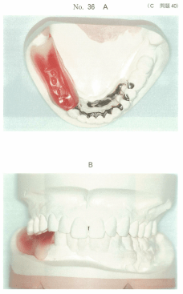
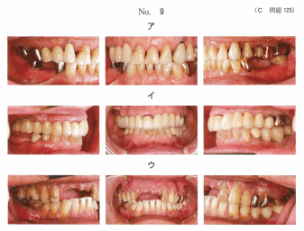
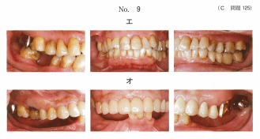
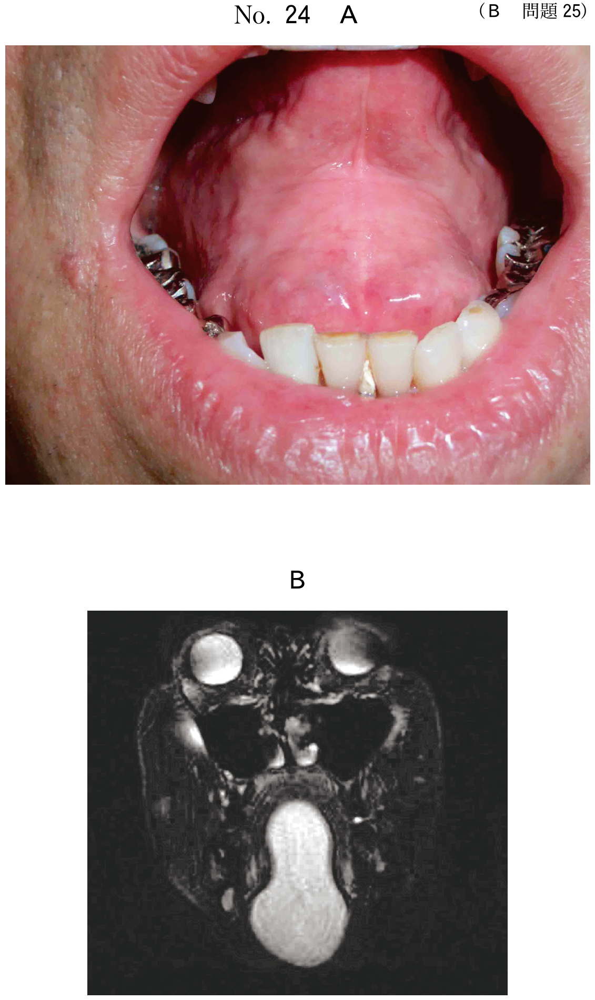
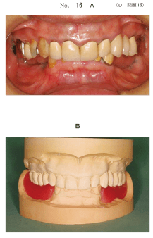
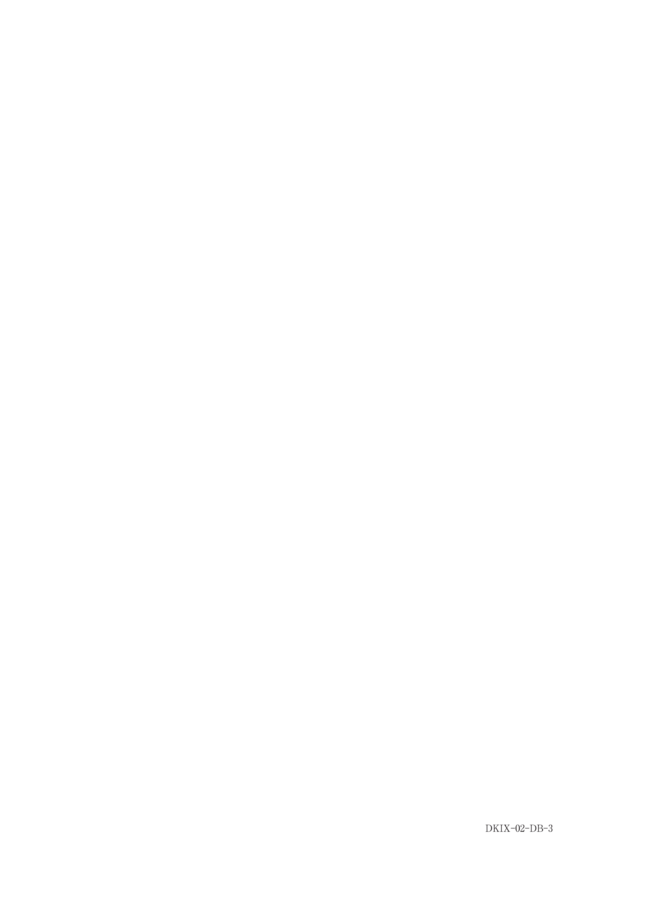
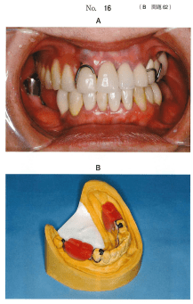
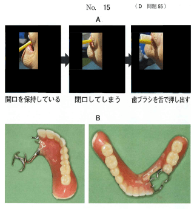
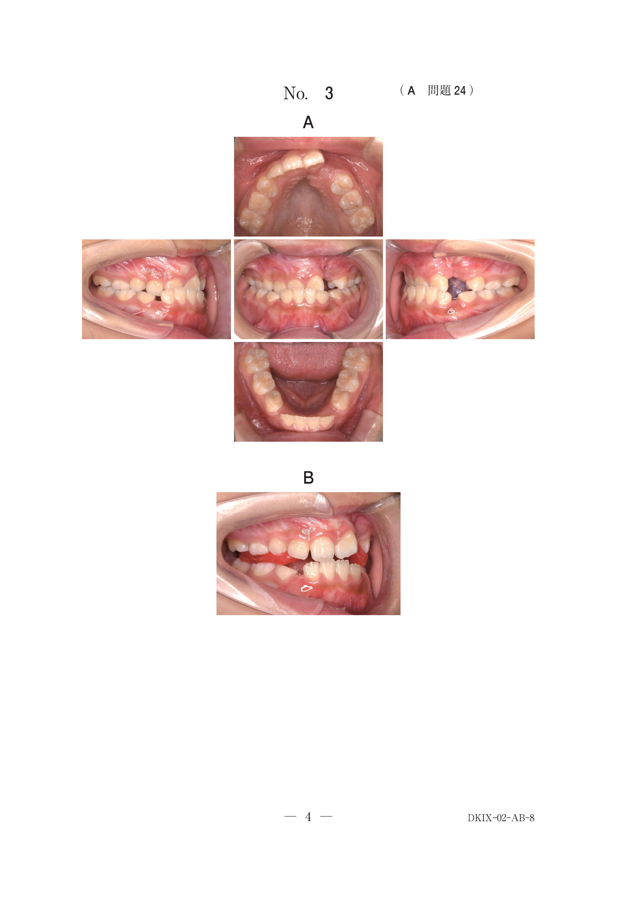

咬合採得とは、上下顎の位置関係、とくに機能的に正しい咬頭嵌合位（つまり中心咬合位）を決定し記録することである。さらに咬合平面を決め、歯列や顔貌の形態についての情報を得る一連の操作。
| 順序 | 内容 | 使用器具 |
|---|---|---|
| 1 | 頭蓋あるいは顎関節に対する上顎歯列の三次元的位置関係の記録 | フェイスボウ |
| 2 | 上下顎歯列間の機能的に正しい咬頭嵌合位の決定と記録、リップサポートの決定 | 咬合床、チェックバイト材 |
| 3 | 偏心咬合位の記録 | チェックバイト材 |
フェイスボウとは、上顎歯列模型を咬合器の上弓に固定するためのトランスファー装置。前方基準点と後方基準点を指示するポインターから構成される。
残存歯の対合接触を参考にしながら、適正な咬合位を求めていく。咬合床あるいはフレームワークを用いて咬合採得を行う。
咬合床の準備が不可欠。以下の手順で行う：
残存歯同士の対合接触がない欠損症例では、顎間関係記録のために咬合床の使用が必須
| 部位 | 咬合堤の幅 |
|---|---|
| 前歯部 | 5mm |
| 小臼歯部 | 7mm |
| 大臼歯部 | 10mm |
咬合床の操作時の安定を目的として、残存歯に係合する維持装置（ワイヤークラスプなど）を設ける。
注意：対合歯の深い圧痕採得や、蝋堤が軟化状態での開口指示は誤り
C1は咬合支持がない症例。咬合高径決定で考慮すべき点：
注意：顎堤形態、舌背の高さ、レトロモラーパッドは咬合高径決定の主要因子ではない
振戦や動作緩慢により、以下の決定が困難：
67歳の女性。部分床義歯製作のため咬合採得を行った。咬合採得後の咬合床を作業用模型に装着した写真（別冊No.36A）と咬合させたときの写真（別冊No.36B）とを別に示す。
水平的顎間関係が適切にトランスファーされたことの確認に有用なのはどれか。2つ選べ。

【解説】水平的顎間関係の確認には残存歯同士の接触状態と上下歯列の正中線の関係が有用。オーバーバイト量は垂直的関係の確認。
部分歯列欠損症例の咬頭嵌合位の口腔内写真（別冊No.9）を別に示す。
顎間関係記録を行う際に咬合床の使用が必須なのはどれか。2つ選べ。


【解説】残存歯同士の対合接触がない症例では咬合床の使用が必須。ウとオは対合歯との接触がなく、咬合床なしでは顎間関係を記録できない。
68歳の男性。義歯不適合による咀嚼障害を主訴として来院した。部分床義歯製作中のある過程の写真（別冊No.29）を別に示す。
このときに行うのはどれか。すべて選べ。

【解説】咬合採得時に行うのは顎間関係の記録、人工歯の色調選択（シェードテイキング）、仮想咬合平面の設定、咬合堤の唇側豊隆（リップサポート）の設定。筋圧形成は印象採得時の操作。
60歳の男性。下顎部分床義歯を製作中である。口腔内写真（別冊No.16A）とある操作後の写真（別冊No.16B）とを別に示す。
この操作で留意するのはどれか。2つ選べ。

【解説】咬合採得では蝋堤の均一な軟化と安静位からの静かな閉口が重要。深い圧痕や軟化状態での開口は変形の原因となる。
70歳の男性。咀嚼困難を主訴として来院した。上顎左側臼歯部欠損による咀嚼障害と診断し、義歯を新製することとした。義歯製作中のある過程の写真（別冊No.3）を別に示す。
次回来院時に行うのはどれか。3つ選べ。

【解説】写真は咬合採得後の蝋義歯製作段階。次回は蝋義歯試適で、咬合検査、適合検査、発音検査を行う。咬合力検査や咀嚼機能検査は義歯完成後。
67歳の女性。下顎義歯の破折に伴う咀嚼困難を主訴として来院した。診察の結果、残存歯と上顎義歯には問題がなかったため、下顎義歯の再製作を行うこととし、精密印象を採得した。初診時の下顎義歯撤去時の口腔内写真（別冊No.16A）と作業用模型上で製作した装置の写真（別冊No.16B）を別に示す。
次回来院時に使用するのはどれか。3つ選べ。

【解説】次回は咬合採得。適合試験材でフレームワークの適合確認、フェイスボウで上顎の三次元的位置記録、シェードガイドで人工歯の色調選択を行う。
88歳の女性。部分床義歯の新製を希望して訪問歯科診療を依頼された。10年前から手指が振戦し動作が緩慢になったため、治療薬を服用しているという。口腔消掃時の一連の動作の写真（別冊No.15A）と使用中の義歯の写真（別冊No.15B）を別に示す。
本症例の咬合採得で決定が困難なのはどれか。2つ選べ。

【解説】パーキンソン病（振戦、動作緩慢）では、安静位測定やタッピング運動が困難なため、垂直的下顎位と水平的下顎位の決定が困難。
部分床義歯製作のための技工物の写真（別冊No.8）を別に示す。
矢印で示す装置の目的はどれか。1つ選べ。

【解説】矢印は咬合床に設けられた維持装置（ワイヤークラスプ）を示す。目的は咬合採得操作時の安定を得ること。
Eichnerの分類C1症例の咬合高径決定で考慮すべきなのはどれか。2つ選べ。
【解説】Eichner C1（咬合支持なし）の咬合高径決定には下顎安静位（安静空隙を参考）と残存歯の歯冠高径（咬耗度の参考）を考慮。レトロモラーパッドは人工歯排列の基準。